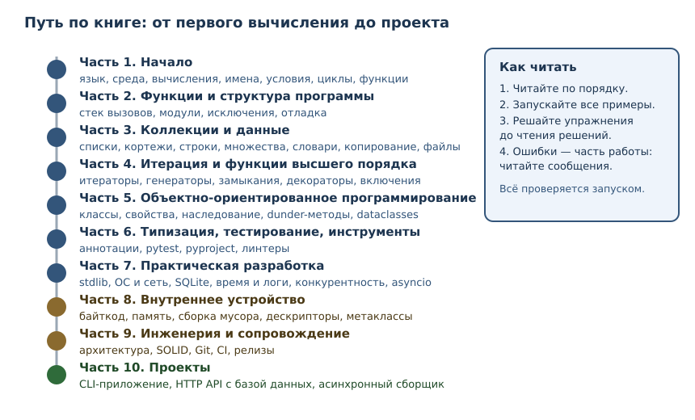

Зачем Python и как устроена эта книга
Что такое Python, где он применяется, как читать книгу и как настроить рабочую среду.
В этой главе
Эта книга доводит читателя без опыта программирования до уровня, на котором он может самостоятельно разрабатывать, тестировать и сопровождать программы на Python. Она не обещает «выучить язык за неделю»: профессиональная разработка — это не только синтаксис, но и умение проверять свои решения, читать чужой код, понимать ошибки и проектировать системы, которые не разваливаются при изменениях.
Прежде чем писать код, разберёмся, что такое Python, из каких частей состоит рабочая среда и как устроена книга, чтобы вы понимали, зачем идёте именно в таком порядке.
1.1 Почему Python
Python — язык программирования общего назначения с динамической типизацией, автоматическим управлением памятью и большой стандартной библиотекой. На нём пишут веб-сервисы, автоматизируют рутинные задачи, обрабатывают данные, обучают модели машинного обучения, администрируют серверы и проверяют научные гипотезы.
Практические причины начать с него:
- Читаемый код. Синтаксис близок к естественной записи алгоритма, поэтому новичок тратит силы на мышление, а не на декорации.
- Большой выбор библиотек. Для типовой задачи уже есть проверенная библиотека; учиться работать с экосистемой так же важно, как писать код.
- Быстрый цикл обратной связи. Программу можно запустить сразу после изменения, без отдельной сборки.
- Востребованность. Python широко применяется в промышленной разработке, анализе данных, инфраструктуре и автоматизации тестирования.
При этом честно обозначим границы: Python — не лучший выбор для драйверов устройств, жёстких требований к реальному времени или мобильных приложений. Профессионализм начинается с понимания, где инструмент уместен, а где нет. Мы будем возвращаться к этому вопросу: например, в главах о производительности и конкурентности.
1.2 Язык, интерпретатор и CPython
Три вещи, которые новички часто смешивают, а различать их важно.
Язык Python — это набор правил: как записываются выражения, какие операции допустимы, что означает каждая конструкция. Язык существует как спецификация и как договорённость между программистами.
Интерпретатор — программа, которая читает исходный код на Python и исполняет его. Именно она сообщает об ошибках и выполняет инструкции.
CPython — эталонная реализация Python на языке C. Когда говорят «Python 3.14», почти всегда имеют в виду CPython 3.14. Существуют и другие реализации (например, PyPy с JIT-компиляцией), но в этой книге мы работаем с CPython и явно отмечаем места, где поведение — особенность реализации, а не гарантией языка.
Это различие имеет практические следствия. Например, глубина рекурсии и сообщения некоторых исключений — особенности CPython; они могут отличаться в других реализациях и версиях. В книге мы будем различать:
- то, что гарантирует язык;
- то, что делает конкретная реализация (обычно CPython);
- то, что рекомендация разработчику.
Книга ориентирована на Python 3.14 и проверяется на нём; большинство примеров работает и на 3.11–3.13. Если поведение заметно менялось между версиями, это оговаривается отдельно.
1.3 Исходный код, программа и REPL
Исходный код — это текст программы, обычно в файле с расширением .py.
Программа — последовательность инструкций, которую интерпретатор
исполняет, чтобы получить результат.
Есть два основных способа работать с Python.
Файл. Вы сохраняете код в файл и запускаете его целиком:
$ python3 program.py
REPL — интерактивный режим «read–eval–print loop»: прочитал строку,
вычислил, вывел результат, повторил. Он запускается командой python3 без
аргументов и удобен для быстрых экспериментов.
$ python3
Python 3.14.4 (main, ...) [GCC 15.2.0] on linux
Type "help", "copyright", "credits" or "license" for more information.
>>> 2 + 2
4
>>>
Разница принципиальна для обучения:
| Файл | REPL | |
|---|---|---|
| Что исполняется | вся программа целиком | каждая введённая строка |
| Удобно для | настоящих программ | проверки гипотез |
| Результат выражения | нужно вывести явно | выводится автоматически |
| Ошибка | прерывает программу | не мешает следующей строке |
В книге мы используем оба режима: короткие проверки удобно делать в REPL,
полноценные примеры — запускать как файлы. Блоки с $ и >>> — это
сеансы оболочки, их не нужно копировать в файл целиком: строки с >>> —
ввод, строки без них — вывод.
1.4 Как устроена эта книга
Книга состоит из десяти частей и сорока восьми глав. Порядок не случаен: части идут от основ к прикладным проектам, а внутри частей каждая глава опирается только на уже объяснённое.

Как устроена отдельная глава:
- Зачем это нужно — место темы в реальной работе.
- Объяснение — определения и правила, без которых примеры превращаются в фокусы.
- Примеры с разбором — что именно происходит при исполнении.
- Типичные ошибки — то, на чём спотыкаются чаще всего.
- Упражнения — практика с проверяемым результатом.
- Проверка понимания — вопросы, которые выявляют пробелы.
- Связи — что уже пройдено и что будет дальше.
Два правила книги, которые стоит принять сразу.
Все примеры проверяются. Каждый блок кода, помеченный как исполняемый, запускается автоматически при сборке книги, а показанный вывод сверяется с фактическим. Если вы получили другой результат — значит, отличается версия Python или окружение; разберитесь в причине, это полезнее, чем «подогнать» ответ.
Решения отделены от условий. Решения находятся в отдельном файле, чтобы вы могли сначала попробовать сами. Чтение решения до попытки почти не даёт навыка: мозг узнаёт ответ, но не учится его находить.
1.5 Рабочая среда
Для занятий нужны три вещи: Python, текстовый редактор и терминал.
Установка Python
- Linux. Обычно Python уже установлен. Проверьте версию; если она ниже 3.11, установите свежую из репозитория дистрибутива или с python.org.
- macOS. Установите Python с https://www.python.org/downloads/ или через менеджер пакетов.
- Windows. Скачайте установщик с https://www.python.org/downloads/ и при установке отметьте «Add Python to PATH».
Проверка версии:
$ python3 --version
Python 3.14.4
В Windows команда может называться python или py. Это нормально: главное,
чтобы версия была не ниже 3.11.
Первый запуск
Создайте файл program.py со следующим содержимым и запустите его. Этот пример
ничего не выводит: его задача — убедиться, что окружение работает.
# Проверка среды: если этот код выполнился без ошибки,
# интерпретатор установлен и готов к работе.
Запуск:
$ python3 program.py
Отсутствие вывода — ожидаемый результат. Комментарии интерпретатор игнорирует, поэтому программа просто завершается успешно. Подробно о комментариях — в следующей главе.
Редактор и терминал
Подойдёт любой редактор с подсветкой синтаксиса. Важнее другое: научитесь запускать программу из терминала, а не только нажимать «Run» в редакторе. Понимание командной строки понадобится в главах о модулях, тестировании, зависимостях и развёртывании.
Инструменты установки пакетов (uv, pip) мы разберём в главе 33, когда
появится первая внешняя зависимость. До этого книга использует только
стандартную библиотеку Python — так примеры остаются воспроизводимыми без
дополнительных установок.
1.6 Как учиться по этой книге
- Пишите код руками. Копирование примеров создаёт иллюзию понимания. Наберите пример, запустите, измените, посмотрите, что сломалось.
- Читайте ошибки. Сообщение об ошибке — не наказание, а точная информация: файл, строка, тип и причина. В главе 11 мы разберём это систематически.
- Не пропускайте упражнения. Упражнения — не тест, а способ построить навык. Если задача не решается за 15–20 минут, перечитайте раздел и попробуйте снова, прежде чем смотреть решение.
- Двигайтесь последовательно. Книга выстроена по зависимостям понятий; перескакивать через главы можно, но тогда часть объяснений будет непонятна не из-за сложности, а из-за пропущенных предпосылок.
- Сомневайтесь и проверяйте. Любое утверждение о поведении Python можно проверить запуском. Это привычка, которая отличает инженера.
1.7 Упражнения
1. Проверка версии
Запустите python3 --version и запишите результат. Объясните, почему книга
требует версию не ниже 3.11, хотя ориентируется на 3.14.
2. Язык и реализация
Объясните своими словами разницу между языком Python, интерпретатором и CPython. Приведите пример утверждения, которое гарантирует язык, и пример утверждения, которое описывает именно CPython.
3. REPL по шагам
Запустите REPL, введите 2 + 2. Опишите, что произошло на каждом из трёх
шагов: чтение, вычисление, вывод. Затем введите заведомо ошибочную строку,
например 2 +, и объясните, почему REPL продолжил работу.
4. Файл вместо REPL
Создайте файл hello.py с одной строкой 2 + 2, запустите его через
python3 hello.py. Объясните, почему на экране ничего не появилось, хотя в
REPL та же строка давала 4.
5. Зачем запускать примеры
Сформулируйте три причины, по которым в этой книге требуется запускать примеры, а не только читать их. Свяжите ответ с идеей проверяемости.
6. Навигация по книге
Откройте оглавление. Определите, какие части нужно пройти до главы об
асинхронности (asyncio) и почему именно они. Назовите не менее трёх глав,
которые логически предшествуют asyncio.
1.8 Проверка понимания
- Чем язык Python отличается от его реализации?
- Что такое REPL и почему он удобен для экспериментов?
- Почему одна и та же строка даёт разный результат в REPL и в файле?
- Какие три роли различает книга: гарантия языка, особенность реализации, рекомендация разработчику?
- Зачем решения упражнений вынесены в отдельный файл?
1.9 Что дальше
Рабочая среда готова. В следующей главе вы напишете первые настоящие программы: научитесь вычислять значения, выводить результат и понимать сообщения об ошибках.